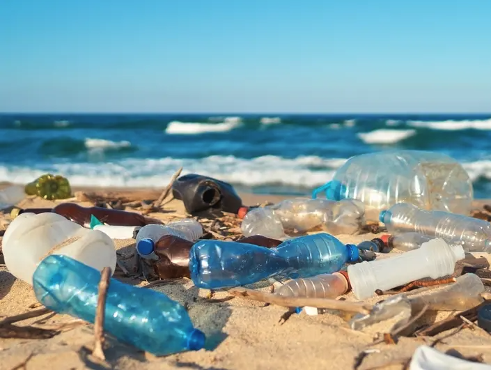

| Product | Description |
|---|---|
|  | Our first step is to start combating the garbage in our oceans is to start at the source...our beaches. |
| Our next step is to fundraise enough money to fund more beach side cleanups and to support more non-profit corporations | |
 |
This midi-size set of bestsellers, including the bestselling Watermelon Niacinamide Dew Drops, harnesses the power of clinically effective actives—PHA, BHA, ceramides, and hyaluronic acid—to visibly tighten pores, smooth texture, soothe, and hydrate for glowing skin. |